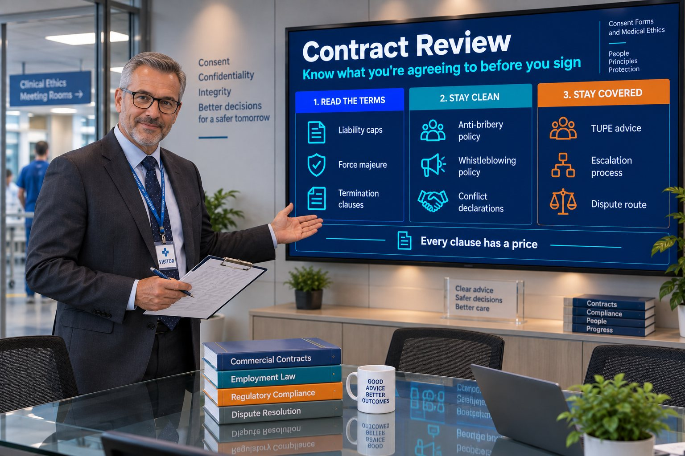

Contract Review
Redlining standard terms, force majeure, liability caps and termination clauses.

Department: Consent Forms and Medical Ethics
Buyer contracts are drafted to protect the buyer. Every clause you accept without reading it has a price, whether or not you ever put a number on it.
Without contract review, you risk signing liability terms your insurance doesn't actually cover, missing TUPE obligations that create workforce and legal exposure, one-sided termination clauses with no negotiated protection, undocumented conflicts of interest surfacing later and disputes with no clear contractual escalation path.
None of that shows up at tender stage — it shows up during delivery, when it's expensive to fix.
Most manufacturers think contract review is a legal formality. It is a commercial one. Uncapped liability, ninety-day payment terms and free tooling all have a price, whether you calculate it or not.
The point is not to make you difficult to deal with. It is to make sure that when you quote a job, you know what you are actually agreeing to carry.
Redlining standard terms, force majeure, liability caps and termination clauses.
Anti-Bribery & Corruption and Whistleblowing policies drafted and followed.
TUPE advisory for contracts involving staff transfer.
Conflict of interest declarations and a known escalation process for disputes.
| Tender criterion | What this service contributes | Score effect |
|---|---|---|
| Risk | Onerous terms identified and negotiated before signature | Major |
| Compliance | Anti-Bribery and Whistleblowing policies often required | Moderate |
| Financial Standing | Liability caps protect financial exposure | Moderate |
| Delivery | Clear terms reduce dispute-driven delivery risk | Moderate |
| Quality | Governance policies support process maturity narrative | Minor |
Six things, every time: the liability cap and whether your insurance actually covers it, payment terms, termination and force majeure, who owns the tooling and intellectual property, any TUPE obligations, and whether your subcontractor agreements carry the same obligations down the chain. Each one has a price, whether you calculate it or not.
Very often, yes. Selection questionnaires regularly ask for them, and the Procurement Act 2023 lets buyers exclude suppliers connected with offences such as bribery and fraud. A written policy that people actually follow is the simplest way to show a buyer your governance is real.
TUPE protects employees' terms when a business or service moves from one employer to another. It can apply when a service contract changes hands and staff move with it, which is common in outsourced and facilities work. If a contract might involve staff transferring to you, assess the cost before you price the bid, not after you have won it.
Sources: Procurement Act 2023 (legislation.gov.uk) · TUPE: employee rights when a business changes hands (GOV.UK)
Reviewed by Rob Atkins, Founder & Principal Consultant, Your Best Solution Limited. Last updated .